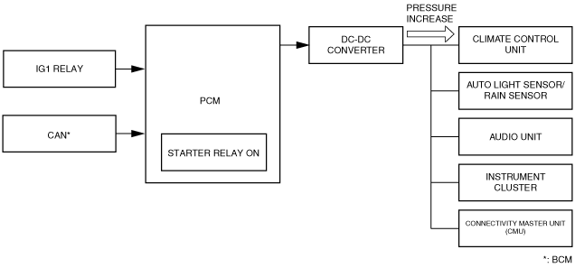

• For the DC-DC converter control for vehicles with i-ELOOP, refer to the [i-ELOOP]. (See i-ELOOP [i-ELOOP].)
Without i-ELOOP
Outline
• Stability of the power supply to the cabin has been realized by preventing decreases in the power supply due to battery voltage decreases while the engine is restarted by the i-stop control.
• When the engine is restarted by the i-stop control, the PCM sends a battery voltage (DC-DC converter downstream voltage) boost request signal to the DC-DC converter.
Block Diagram

am2zzn00003595
Operation
• When the engine is restarted by the i-stop control, the PCM sends a voltage boost request signal to the DC-DC converter so that the DC-DC converter downstream voltage is maintained at 11.5―12.5 V.